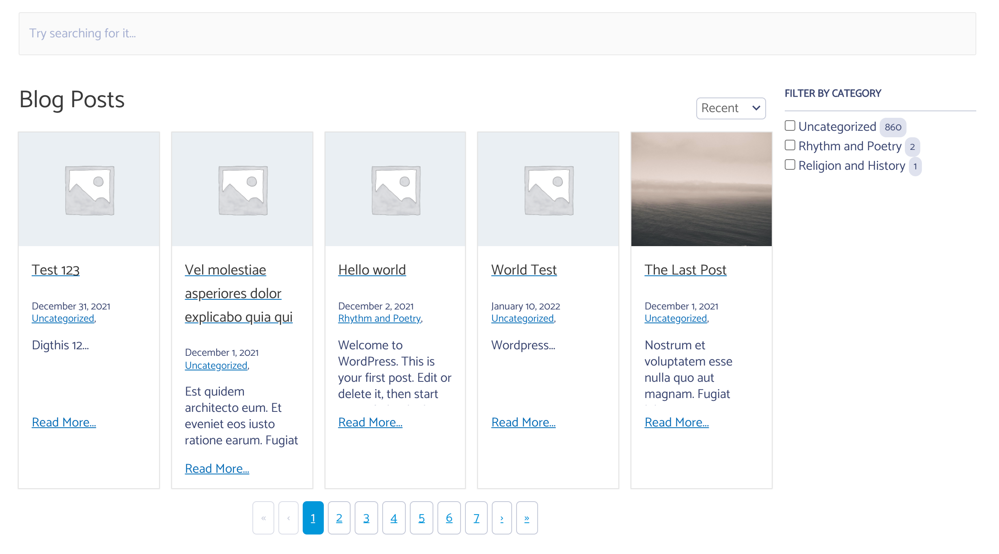

Overriding the template allows you to change things of the output for your autocomplete or instant search design as you need to.
- Plugin base folder:
search-with-typesense/templates
The templates are in the plugin serach-with-typesense/templates and you can override it by copying it to your child theme.
To override, copy files from wp-content/plugins/search-with-typesense/templates/ folder to wp-content/themes/your-theme/search-with-typesense/,
Then you can make the changes as you need. For example if you want the filters to show up on the right instead of the left.
Copy the file instant-search.php from wp-content/plugins/search-with-typesense/templates/ to wp-content/themes/your-theme/search-with-typesense/instant-search.php.
And change the div structure so that main-panel is first and filter-panel is second.
End Result: 
Below is sample of code - please change the template by copying from parent
<div class="main-panel">
<div class="cm-typesense-search-results-wrapper">
<div class="cm-typesense-search-posts-pages-results-wrapper">
<?php
foreach ( $args['post_types'] as $post_type ) {// echo '<pre>'; var_dump( $config ); echo '</pre>';
?>
<div class="cm-typesense-shortcode-search-heading">
<h2 class="cm-typesense-shortcode-search-title">
<?php
$title = ( isset( $config['config']['post_type'][ $post_type ]['label'] ) && $config['config']['post_type'][ $post_type ]['label'] != '' ) ? $config['config']['post_type'][ $post_type ]['label'] : $config['available_post_types'][ $post_type ]['label'];
echo esc_html( $title ); ?>
</h2>
<div class="cm-typesense-shortcode-search-<?php echo esc_html( $post_type ); ?>-sortby cm-typesense-sortby"></div>
</div>
<div class="cm-typesense-shortcode-search-<?php echo esc_html( $post_type ) ?>-result"></div>
<div class="cm-typesense-pagination cm-typesense-shortcode-search-<?php echo esc_html( $post_type ); ?>-pagination"></div>
<?php } ?>
</div>
</div>
</div>
<?php if ( $args['filter'] === 'show' && 1 === count( $args['post_types'] ) ) { ?>
<div class="filter-panel">
<?php
foreach ( $facet as $filters ) {
foreach ( $filters as $filter ) { ?>
<div class="cm-typesense-shortcode-search-<?php echo esc_html( $filter ); ?>-filters"
data-title ="<?php esc_html_e( sprintf( 'Filter by %s', ucwords( esc_html( $filter ) ) ), 'search-with-typesense' ); ?>"
></div>
<?php }
}
?>
</div>
<?php } ?>